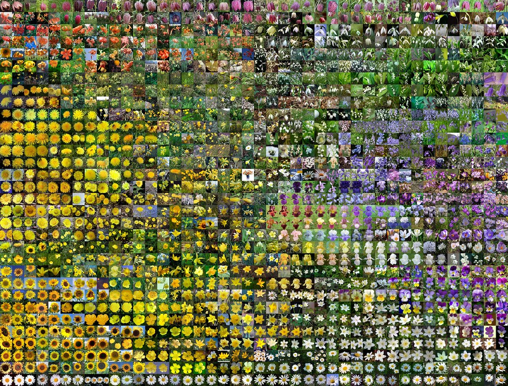

Projects
Visit my

-

Neural Style Transfer Reddit Wallpaper
In this independant project, I combined webscrapping and Neural Style Transfer to generate unique images. I used VGG19 and Total variation loss to create the model. -

Understanding Human Activity in the Amazon Basin
In this project I created a step by step notebook detailing the steps towards performing multi-label classification task on a dataset consisting of satelite iimagery of the Amazon basin. The notebook explains how to preprocess the data, create a base model and adopt improvements. -

In Progress: Computational Law
In this project mentored by Stanford CodeX, I investigate use cases for logic programming and computational law with the goal of making legal forms and processes of California's Judicial Council accessible to all parties. -
 In Progress: Quantitative Metrics for Feature Visualization
In this project supported by Stanford Existential Risk Initiative's fellowship, I investigate quantitative metrics for feature visualization of CNN models. -

In Progress: Parametric Materials Website
In this project I created a website running a pytorch model on the backend to output photorealistic parametric materials. This website when fully released can be utilized by designers who work with materials written in Nvidia's MDL material modeling language.
Work Experience
See my complete work history on

Undergraduate Student Researcher
CodeX
April 2021 - Present
I investigate use cases for logic programming and computational law with the goal of making legal forms and processes of California's Judicial Council accessible to all parties.
Undergraduate Student Researcher
Stanford Vision and Learning Lab
April 2021 - Present
I work on a project attempting to use deep learning to create photo-realistic 3D Scene Modeling and Design.
Teacher & curriculum developer
INPIRIT AI
Sept 2020 - Present
I teach weekly sessions on AI topics including vision, CNNs and NLP. I also develop AI projects as part of the curriculum development team.
Undergraduate Student Researcher
Stanford Vision and Learning Lab
Jun 2020 - Sept 2020
I worked on a project involving Robotic Task Manipulation and Computer Vision, helped with data collection and implemented my own A3C agent using Tensorflow.
Coding and Robotics Coach
MDUSD
Summer 2018
I lectured students on topics such as coding, robotics and their real world applications. I Provided one-on-one mentorship that resulted in projects adressing real world needs.
Writing